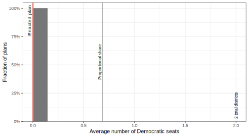
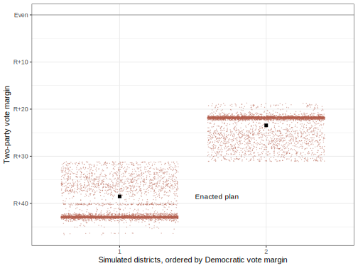
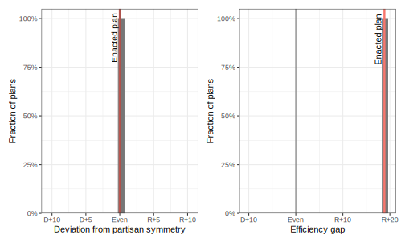
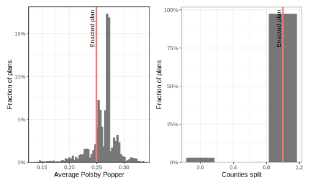
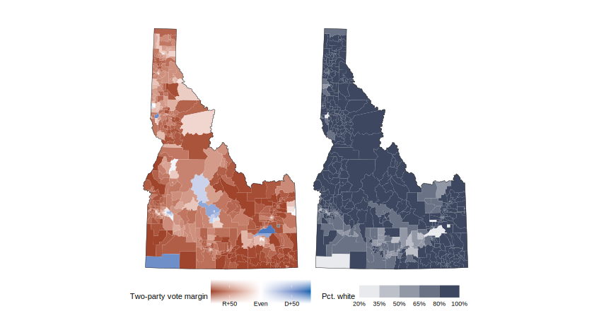

Idaho Congressional Districts
Idaho has 2 congressional districts. We’ve generated 5,000 sets of randomly simulated districts according to the relevant criteria. Three of these plans are shown here, along with the actual enacted map.
Partisan Features
In Idaho, Democrats win about 34% of the vote in a typical statewide election. Proportionally, that would translate to 0.7 Democratic seats out of 2 total.

But proportionality isn’t guaranteed, even in a fair redistricting process. In our simulated plans, Democrats won anywhere from 0.0 to 0.0 seats on average, with 0.0 being the most typical. In contrast, we expect the enacted plan to yield 0.0 Democratic seats on average, which is in line with the simulated plans.
The graph below breaks this down in detail, showing how each district of the enacted plan compares to the set of simulated districts.

Gerrymandering metrics
There are other ways of measuring the partisan skew of redistricting plan. The graph below shows two these metrics. The deviation from partisan symmetry measures the expected difference in each party’s share of seats if they each won 50% of the statewide vote. The efficiency gap is calculated as the difference in the number of wasted votes for each party. These metrics may be misleading for a strongly Republican state like Idaho. Learn more about these metrics here.

Traditional redistricting criteria
Factors other than partisanship are important for redistricting, too. The graph below shows the geographic compactness and the number of counties which are split into multiple districts. As far as compactness, Idaho’s enacted plan scores a 0.25, less than 82% of all simulated plans (a higher score means more compact). It splits 1 county, compared to an average of 1 county for our simulated plans.

Political Geography
These two maps show the partisan lean across Idaho in a typical statewide election, and the share of minority voters around the state.

More information
Learn more about our methodology.
Elections included in analysis:
- President 2016
- US Senate 2016
- Governor 2018
- Attorney General 2018
- Secretary of State 2018
- President 2020
- US Senate 2020
Redistricting requirements
Our algorithmic constraints used in simulations are in part are based on some of these requirements and discretionary criteria. See full documentation and code for the complete implementation details.
- be contiguous (72-1506(6)).
- have equal populations (72-1506(3)).
- be geographically compact (72-1506(4), 72-1506(5)).
- preserve county and municipality boundaries as much as possible (72-1506(2)).
- not be drawn to favor party or incumbents (72-1506(8)).
- connect counties based on highways (72-1506(9)).